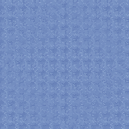

This old-school effect simulates rain, as seen from above.
First, we create our canvas, get the rendering context, then create two 16-bit integer arrays, as well as two ImageData objects — one to use as a buffer and another to store the background texture.
//Canvas and context
var canvas = document.createElement("canvas");
canvas.width = 640;
canvas.height = 480;
var ctx = canvas.getContext("2d");
//Source and destination arrays. This is where the ripple data is stored.
var source = new Int16Array(canvas.width * canvas.height);
var dest = new Int16Array(canvas.width * canvas.height);
//Target and texture buffers
var target = new ImageData(canvas.width, canvas.height);
var texture = new ImageData(256, 256);Next, we create the texture. A light-blue XOR texture is used here for simplicity's sake. You could load an image from a file, but I'll cover that later.
//Generate texture
for (let y = 0; y < texture.height; x++) {
for (let x = 0; x < texture.width; x++) {
let id = (y * texture.width + x) * 4;
let value = x ^ y;
texture.data[id] = value / 4;
texture.data[id + 1] = value;
texture.data[id + 2] = value;
texture.data[id + 3] = 255;
}
}Now that we have everything, it's time to write the render loop. This is going to be a big function with multiple steps, so I'll try to explain things as best I can in the comments.
//Important variables
var lastTicks = 0;
var rippleSize = 12288;
var interval = 0.5;
var end = (canvas.height - 1) * canvas.width;
function render(t) {
let currentTicks = t / 1000;
if (currentTicks - lastTicks > interval) {
let rx = Math.floor(Math.random() * canvas.width);
let ry = Math.floor(Math.random() * canvas.height);
source[ry * canvas.width + rx] = Math.round(Math.random() * rippleSize)
lastTicks = currentTicks;
}
//
//
for (let i = canvas.width; i < end; i++) {
dest[i] = ((source[i - 1] + source[i + 1] + source[i - canvas.width] + source[i + canvas.width]) >> 1) - dest[i];
dest[i] -= (dest[i] >> 5);
}
//Swap source and destination arrays
let tmp = dest;
dest = source;
source = tmp;
for (let y = 1; y < canvas.height - 1; y++) {
let ofs = y * canvas.height;
for (let x = 1; x < canvas.width - 1; x++) {
//Neighboring values on the X and Y axes. For the X-axis we take values to the left and right, while the Y-axis uses values above and below.
//Since these are one-dimensional arrays, we advance up or down the Y-axis by adding or subtracting the width.
let dx = source[ofs + x - 1] - source[ofs + x + 1];
let dy = source[ofs + x - this.width] - source[ofs + x + this.width];
//Retrieve texel from background texture, shifted based on the previously provided coordinates.
let tx = (((y + dy) % texture.height) * texture.width + ((x + dx) % texture.width)) * 4;
//Individual color values for the current pixel. Alpha is left out.
let r = texture.data[tx];
let g = texture.data[tx + 1];
let b = texture.data[tx + 2];
//Now that we have everything, it's time to
let targetIndex = (ofs + x) * 4;
//
//The subtraction is technically optional, but I've found that if you leave it out the ripples become harder to see on some textures.
target.data[targetIndex] = Math.min(Math.max(r - dx, 0), 255);
target.data[targetIndex + 1] = Math.min(Math.max(g - dx, 0), 255);
target.data[targetIndex + 2] = Math.min(Math.max(b - dx, 0), 255);
target.data[targetIndex + 3] = 255;
}
}
//Render the frame and repeat
ctx.putImageData(target, 0, 0);
window.requestAnimationFrame(render);
}
//Render the canvas and start the animation.
window.requestAnimationFrame(render);
document.body.appendChild(canvas);Put it all together and you should get something that looks like this:
It's also possible to load a texture from a file. For this example, we'll be using the following image:

First, you'll need to remove the code that generates the XOR texture, then replace the texture variable with var texture;. This leaves the texture variable empty, giving you room to do whatever we want with it.
Next, you'll need a function that converts the image into ImageData, which will allow you to access individual pixels. Luckily, we already have one here. Feel free to copy it into your code somewhere.
It's worth noting that the loadImage function in that script doesn't return ImageData directly — instead, it returns a Promise containing ImageData. To get the ImageData from the Promise and use it as the texture, you'll need to use the Promise's then() function, which calls an additional function when the Promise is fulfilled or rejected, using the data from the Promise as arguments. Here's an example of what that might look like:
loadImage("RainBackground.png").then((data) => {
texture = data;
window.requestAnimationFrame(draw); //Make sure the texture is loaded before we start.
})Replace the initial window.requestAnimationFrame(draw) call at the end of your script with that, and paste the image into your project folder, and you have your new background.
If you'd like a more detailed explanation of how Promises work, MDN has a pretty good explanation.
That aside, if everything goes well, you should see something like this:
These kinds of ripple effects have all sorts of uses outside of simulating rain. For example, instead of just creating the ripples randomly, you could create one wherever you click your mouse for some really interesting menus.